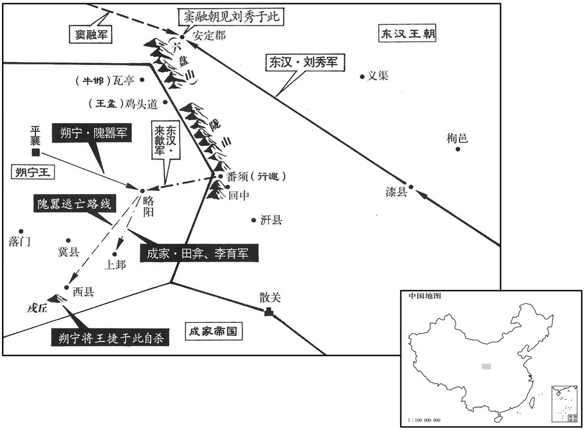

公元32年资治通鉴：本年记事、原文与白话对照
按原书编年位置阅读；追叙和史论不等于本年发生的事件。白话采用所据译本，缺译不以生成译文补齐。
卷42 · 本年记事
公元32年 · 汉世祖光武皇帝建武八年
八年〔（壬辰、三二）〕
上传原文的注释括号有异常，字符原样保留；无法可靠划分的段落默认全文显示。
本年事件索引（现代整理）

本年形势与背景参考图
春，来歙将二千余人伐山开道，从番须、回中径袭略阳，〔贤曰：略阳，县名，属天水郡，故城在今秦州陇城县西北。番，音盘。宋白曰：略阳道在陇城县东六十里，即故冀城；魏黄初中，改为陇城。时隗嚣居冀。以地理考之，当从宋说。〕斩隗嚣守将金梁。〔姓谱：金，古金天氏之后。又，汉金日磾，本匈奴休屠王子，以祭天金人为金氏。〕嚣大惊曰：「何其神也！」帝闻得略阳，甚喜，曰：「略阳，嚣所依阻，心腹已坏，则制其支体易矣！」〔易，以鼓翻。〕
春季，来歙率领两千余人伐山开路，从番须、回中径直袭击略阳县，斩隗嚣的守将金梁。隗嚣大为震惊，说：“怎么这么神速！”刘秀听说攻取略阳，非常高兴，说：“略阳是隗嚣所依据的屏障，心脏腹部已坏，那么制服他的肢体就容易了。”
吴汉等诸将闻歙据略阳，争驰赴之。上以为嚣失所恃，亡其要城，势必悉以精锐来攻；旷日久围而城不拔，士卒顿敝，乃可乘危而进。皆追汉等还。隗嚣果使王元拒陇坻，行巡守番须口，王孟塞鸡头道，〔贤曰：鸡头，山道也，一名崆峒山，在原州西。塞，悉则翻。〕牛邯军瓦亭。〔贤曰：安定乌氏县有瓦亭故关，有瓦亭川水，在今原州南。杜佑曰：瓦亭关在唐原州之萧关。萧关，汉朝那县地。邯，下甘翻。〕嚣自悉其大众数万人围略阳，公孙述遣将李育、田弇助之，斩山筑堤，激水灌城。来歙与将士固死坚守，矢尽，发屋断木以为兵。〔断，丁管翻；下同。〕嚣尽锐攻之，累月不能下。
吴汉等将领听说来歙占据略阳，争着率军驱驰前往。刘秀认为，隗嚣失去所依据的险阻，丢掉了重要的城市，势必出动所有的精锐部队前来进攻，等到旷日持久，敌军包围城市而不能攻占城市，士兵困顿疲惫的时候，东汉军队才可以乘敌人之危挺进。于是，把吴汉等全都追回。隗嚣果然派王元在陇坻抵御，派行巡把守番须口，派王孟堵住鸡头道，派牛邯在瓦亭驻屯。隗嚣亲自率领大军数万人包围略阳。公孙述派遣将领李育、田协助作战。他们挖山筑堤，企图放水灌城。来歙和将士们誓死坚守，箭射完了，就拆掉房屋把木头断开作为兵器。隗嚣用全部精锐部队攻城，几个月都不能攻下。
夏，闰四月，帝自将征隗嚣，光禄勋汝南郭宪谏曰：「东方初定，车驾未可远征。」乃当车拔佩刀以断车靷。〔靷，在马胸；音胤。〕帝不从，西至漆。〔漆县，属右扶风，以漆水名县。杜佑曰：新平，汉漆县地。〕诸将多以王师之重，不宜远入险阻，计冘豫未决；〔冘，与犹同。〕帝召马援问之。援因说隗嚣将帅有土崩之势，兵进有必破之状；〔说，如字。〕又于帝前聚米为山谷，指画形势，开示众军所从道径，往来分析，昭然可晓。帝曰：「虏在吾目中矣！」明旦，遂进军，至高平第一，〔郡国志：高平县有第一城。〕
夏季，闰四月，刘秀亲自率军征伐隗嚣。光禄勋汝南人郭宪劝阻说：“东方刚刚平定，陛下不能远征。”于是挡住车，拔出佩刀，砍断引车前行的皮带。刘秀不听，西行至漆县。将领们多数都认为，皇上率领的军队重要，不宜远行深入到险恶、阻塞的地方。刘秀拿不定主意，召见马援询问意见。马援于是说，隗嚣的将领们已有土崩瓦解之势，如果进军，就会有必破之状。他又在刘秀面前，用米聚成山谷，指出敌我双方的形势，展示大军进攻的路线，来回分析，十分清晰明白。刘秀说：“敌人的情况都在我的眼里了！”第二天一早，大军出发，抵达高平县第一城。
窦融率五郡太守及羌虏小月氏等步骑数万，〔月氏为匈奴所破，余种西踰葱岭，其不能去者，保南山，号小月氏。氏，音支。〕辎重五千余两，〔重，直用翻。两，音亮。〕与大军会。是时军旅草创，诸将朝会礼容多不肃，〔朝，直遥翻。〕融先遣从事问会见仪适。〔贤曰：犹言仪注。余谓适，当也，会见之仪各有当也。见，贤遍翻。〕帝闻而善之，以宣告百僚，乃置酒高会，待融等以殊礼。〔殊，异也，绝也；谓待之礼异绝于群臣也。〕
窦融率领五郡太守以及羌族、小月氏等步骑兵数万人、辎重车五千余辆，和刘秀的大军会合。当时军队还处于草创时期，将领们朝拜皇帝的礼仪多不整肃。窦融先派从事请示朝见的恰当礼仪。刘秀听后认为很好，宣告百官让他们效法。于是设置盛大的酒宴，用特别的尊贵礼仪招待窦融等。
遂共进军，数道上陇。〔上，时掌翻。〕使王遵以书招牛邯，下之，拜邯太中大夫。于是嚣大将十三人、属县十六、〔地理志：天水郡十六县。〕众十余万皆降。嚣将妻子奔西城，从杨广，〔贤曰：西城，县名，属汉阳郡，一名始昌城，在今秦州上邽县西南。余据地理志，西县本属陇西郡，后乃改属汉阳。西城者，西县城也；以西城为县名，误矣。明帝永平十七年方改天水为汉阳。〕而田弇、李育保上邽。〔上邽县属大水郡。弇，古含翻。〕略阳围解。帝劳赐来歙，〔劳，力到翻。〕班坐绝席，在诸将之右，〔专席而坐于诸将之上，不与诸坐者并也。〕赐歙妻缣千匹。〔毛晃曰：缣，并丝缯；又绢也。〕
于是，联军共同进军，分成几路上陇山。刘秀命王遵写信招降牛邯。牛邯投降，刘秀任命他当太中大夫。于是隗嚣的十三位大将、所属的十六个县、部众十余万人全部归降。隗嚣带着妻子儿女逃往西城，投奔杨广。公孙述的将领田、李育退保上县。略阳县解围。刘秀慰劳、赏赐来歙，把席位单独设
在将领们的上首，赐给来歙的妻子一千匹绢帛。
进幸上邽，诏告隗嚣曰：「若束手自诣，父子相见，保无他也。若遂欲为黥布者，亦自任也。」〔谓必不归降，如黥布云欲为帝，亦任之也。〕嚣终不降，于是诛其子恂。使吴汉、岑彭围西城，取弇、盖延围上邽。
刘秀到达上，下诏给隗嚣说：“你如果放弃武力，自己前来投降，父子能够相见，保证没有其他事故。你如果要做黥布，也随你便。”隗嚣到底不肯投降。于是刘秀诛杀他的儿子隗恂。派吴汉、岑彭包围西城，派耿、盖延包围上。
以四县封窦融为安丰侯，〔融封安丰、阳泉、蓼安、风四县，皆属庐江郡。〕弟友为显亲侯，〔郡国志：汉阳郡有显亲县。贤曰：故城在今秦州成纪县东南。帝置暊亲县以封友，褒显窦氏有孝文皇后之亲也。〕及五郡太守皆封列侯，竺曾，助义侯；梁统，成义侯；史苞，褒义侯；库钧，辅义侯；辛肜，扶义侯。〕遣西还所镇。融以久专方面，惧不自安，数上书求代；〔数，所角翻；下同。〕诏报曰：「吾与将军如左右手耳，数执谦退，何不晓人意！勉循士民，〔循，抚循也，顺也。〕无擅离部曲！」〔离，力智翻。〕
两版字句有差异，建议核对原文。
刘秀用四个县的土地封窦融为安丰侯，封窦融的弟弟窦友为显亲侯。五郡太守全封为列侯，命他们回到西方的任所。窦融因长期在一个地方独揽大权，心里畏惧不自安，几次上书请以别人接替。刘秀下诏回答说：“我和将军的关系，就像左右手，你几次谦虚退让，怎么不明了我的心意？你要尽力安抚士人百姓，不要擅自离开自己的部曲。”
颍川盗贼群起，寇没属县，河东守兵亦叛，京师骚动。〔郡国志：颍川郡在雒阳东南五百里。河东郡在雒阳西北五百里。〕帝闻之曰：「吾悔不用郭子棋之言。」〔郭宪，字子横。〕秋，八月，帝自上邽晨夜东驰，赐岑彭等书曰：「两城若下，便可将兵南击蜀虏。人苦不知足，既平陇，复望蜀。〔复，扶又翻；下同。〕每一发兵，头须为白！」〔言苦心于军事也，须，与须同，古字通用。〕
颍川郡盗贼蜂起，攻陷本郡所属县城，河东郡的守军也叛变了，京都洛阳震动。刘秀听到消息说：“我后悔没有听郭宪的话！”秋季，八月 ，刘秀从上县日夜向东奔驰。他写信给岑彭等，说：“如果攻陷两城，就可率领军队向南攻打公孙述。人被不知足所苦，已经平定了陇，又想得到蜀。每一次出兵，头发胡须都因此变白。”
九月，乙卯，车驾还宫。帝谓执金吾寇恂曰：「颍川迫近京师，〔近，其靳翻。〕当以时定。惟念独卿能平之耳，从九卿复出以忧国可也！」对曰：「颍川闻陛下有事陇、蜀，故狂狡乘间，相注误耳。〔贤曰：狡，猾也。间，古苋翻。说文曰：注，亦误也，音卦。〕如闻乘舆南向，〔乘，绳证翻。〕贼必惶怖归死，〔怖，普布翻。〕臣愿执锐前驱。」帝从之。庚申，车驾南征，颍川盗贼悉降。寇恂竟不拜郡，百姓遮道曰：「愿从陛下复借寇君一年。」〔恂前为颍川太守，故云复借也。〕乃留恂长社，〔长社县，属颍川郡。应劭曰：宋人围长葛是也；其社中树暴长，更名长社。师古曰：长，读如字。〕镇抚吏民，受纳余降。〔降，户江翻。〕
九月乙卯（初一），刘秀回到洛阳皇宫。刘秀对执金吾寇恂说：“颍川靠近洛阳，应当及时平定。我想到只有你能扫平盗贼。请你以九卿的身分，再次出征为国解忧！”寇恂回答说：“颍川盗贼听说陛下远征陇、蜀，所以那些狂徒、狡诈之辈想乘机作乱。如果他们听说陛下南行，一定吓得要死，我愿手持兵器充当前锋。”刘秀同意。庚申（初六），刘秀南征，颍川盗贼全部投降。寇恂最终没有被任命为郡守。百姓在道路上挡住车驾的去路说：“愿陛下把寇君再借给我们一年。”刘秀于是把寇恂留在长社县，命他镇慑安抚官民，收容投降的残余贼寇。
东郡、济阴盗贼亦起，〔邵国志：东郡去雒阳八百余里。济阴郡在雒阳东八百里。济，子礼翻。〕帝遣李通。王常击之。以东光侯耿纯尝为东郡太守，〔东光县属勃海郡。贤曰：今沧州县。〕威信着于卫地，〔东郡，卫地也。〕遣使拜太中大夫，使与大兵会东郡。东郡闻纯界，盗贼九千余人皆诣纯降，大兵不战而还；玺书复以纯为东郡太守。〔玺，斯氏翻。〕戊寅，车驾还自颍川。
东郡、济阴也有盗贼兴起，刘秀派遣李通、王常予以打击。因东光侯耿纯曾经当过东郡太守，在卫地很有威信，刘秀派使者任命耿纯当太中大夫，让他和李通、王常率领的大军在东郡会合。东郡人听说耿纯进入郡界，九千多名盗贼全都向耿纯投降，大军没有经过战斗就返回了。刘秀再度任命耿纯当东郡太守。戊寅（二十四日），刘秀从颍川返回洛阳。
安丘侯张步将妻子逃奔临淮，与弟弘、蓝欲招其故众，乘船入海；琅邪太守陈俊追讨，斩之。
安丘侯张步带领妻子儿女逃往临淮，和弟弟张弘、张蓝打算招集旧部，乘船入海。琅邪太守陈俊追击，将张步斩首。
冬，十月，丙午，上行幸怀；十一月，乙丑，还雒阳。
冬季，十月丙午（二十二日），刘秀前往怀城。十一月乙丑（十二日），刘秀返回洛阳。
杨广死，隗嚣穷困，其大将王捷别在戎丘，〔水经注：戎丘城在西城西北，戎溪水径其南。〕登城呼汉军曰：「为隗王城守者，皆必死，无二心，〔为，于伪翻。〕愿诸军亟罢，请自杀以明之。」遂自刎死。〔刎，扶粉翻。〕
杨广去世，隗嚣处于穷途末路。他的大将王捷另外在戎丘城驻扎，王捷登上城楼向汉军高喊：“替大王隗嚣守城的人，全都必死，但没有二心。请你们赶快停止进攻，我用自杀来表明我们的决心。”于是自刎而死。
初，帝敕吴汉曰：「诸郡甲卒但坐费粮食，若有逃亡，则沮败众心，〔沮，在吕翻。败，蒲迈翻。〕宜悉罢之。」汉等贪井力攻嚣，遂不能遣，粮食日少，吏士疲役，逃亡者多。岑彭壅谷水灌西城，城未没丈余。会王元、行巡、周宗将蜀救兵五千余人乘高卒至，〔卒，读日猝。〕鼓噪大呼曰：「百万之众方至！」汉军大惊，未及成陈，〔呼，火故翻。陈，读曰阵。〕元等决围殊死战，遂得入城，迎嚣归冀。吴汉军食尽，乃烧辎重，引兵下陇，盖延、耿弇亦相随而退。〔重，直用翻。盖，古盍翻。〕嚣出兵尾击诸营，〔尾击，谓寻其后而击之也。〕岑彭为后拒，诸将乃得全军东归；唯祭遵屯汧不退。〔汧，口坚翻。〕吴汉等复屯长安，岑彭还津乡。于是安定、北地、天水、陇西复反为嚣。〔为，于伪翻。
当初，刘秀对吴汉下令说：“各郡来的士兵只坐着消耗粮食，如果有人逃亡，就会动摇军心，应当全部遣散。”吴汉等贪图用众多的军队围攻隗嚣，因而未能遣散。粮食日渐减少，官兵疲惫，逃跑的人很多。岑彭堵住谷水，把水灌进西城，水位离城头还有一丈多。这时，王元、行巡、周宗率领公孙述派的救兵五千余人，从高处突然到来，擂起战鼓大声呼喊：“百万大军来了！”东汉军队大惊失色，没有来得及布阵。王元等突破包围，殊死战斗，于是得以进入西城，接隗嚣回到冀县。吴汉的军队粮食吃尽，就烧掉辎重装备，领兵下陇山。盖延、耿也相继撤退。隗嚣出兵尾随攻打各部队。岑彭率军断后，将领们才得以全军东归。只有祭遵驻屯县没有撤退。吴汉等又驻屯长安，岑彭回到津乡。于是安定、北地、天水、陇西又反被隗嚣占领。
校尉太原温序为嚣将苟宇所获，〔姓谱：唐叔虞之子受封于河内温，因以命族。又郄至食采于温，号温季，因以为族。据序传，序为护羌校尉，行部至襄武，为苟宇所获。考异曰：按序传及袁纪皆称「序为护羌校尉」。检西羌传，九年方置此官，牛邯为之。又云：「邯卒，职省」，则序无缘作「护羌」，今但云校尉。〕宇晓譬数四，欲降之。序大怒，叱宇等曰：「虏何敢迫胁汉将！」因以节檛杀数人。〔檛，职瓜翻，击也。〕宇众争欲杀之，宇止之曰：「此义士，死节，可赐以剑。」序受剑，衔须于口，顾左右曰：「既为贼所杀，无令须污土！」〔污，乌故翻。〕遂伏剑而死。从事王忠持其丧归雒阳，诏赐以耱地，拜三子为郎。
校尉太原人温序被隗嚣的将领苟宇俘获，苟宇再三再四地劝说温序投降。温序大怒，呵斥苟宇等说：“你们这些匪徒怎么敢胁迫汉将！”然后用手中符节击杀数人。苟宇的左右争着要杀温序。苟宇制止说：“这是一位义士，以死来保全名节。可以赐他宝剑。”温序接受宝剑，把胡须衔到嘴里，对左右说：“既然被贼寇所杀，不要让胡须被土玷污。”于是用剑自杀。从事王忠把他的尸首送回洛阳，刘秀下诏赐给他墓地，任命他的三个儿子为郎。
十二月，高句丽王遣使朝贡，帝复其王号。〔王莽贬高句丽为侯，今复其王号。句，音如字，又音驹，又巨俱翻。〕
十二月，高句丽王派使者朝贡，刘秀恢复了他的王号。
译本中未与胡注本可靠对应的内容
以下另列供核对版本差异，不并入胡注本正文。
译本所附古文
[6]是岁，大水。
译本白话
这一年，发生水灾。